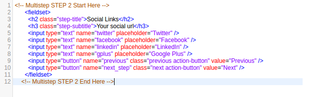
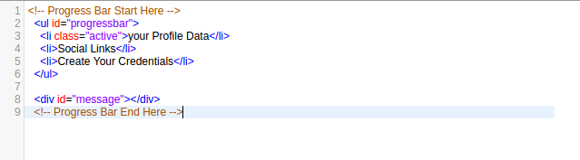
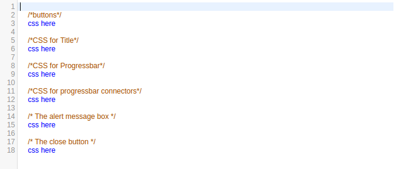

Created: 15/06/2017
By: Momin Iqbal
Email: iahmed964@gmail.com
Thank you for purchasing my script. If you have any questions that are beyond the scope of this help file, please feel free to email via my user page contact form here. Thanks so much!
This script is a fixed layout with single columns. All of the information within the main content area is nested within a div. Below you can check the snippet for single step. One can add another step by copying below formatted fieldset structure and putting next to any fieldset structure. One need to add 'li' on above fieldset for label. Here is the general structure.
 I'm using sinlge CSS file in this script. This file contains some general styling, such as anchor tag colors, font-sizes, etc. Keep in mind, that these values might be overridden somewhere else in the file.
The file named mutli-step.css also has stling for Title, progressbar, progress connector, alert messages, the close button.
If you would like to edit a specific section of the site, simply find the appropriate label in the CSS file, and then scroll down until you find the appropriate style that needs to be edited.
You can override the css by creating new css and linking the css below the main css, so that all properties will be override without using '!important'.
This script use imports three jQuery files.
checkPasswordMatch() function to check compare passwordsBelow is the code for validation purpose when user click on next button or focus out of the input box.
if($('.next').data('clicked')) {
/*If user click direct Next Button without filling the required details*/
$(".step_required").each(function( index ) {
if (!$(this).val())
$(this).addClass('error').parent().find('mark').removeClass('validate').addClass('error');
else
$(this).removeClass('error').parent().find('mark').removeClass('error').addClass('valid');
});
}else{
/*Individual Focus out value check*/
if (!$(this).val())
$(this).addClass('error').parent().find('mark').removeClass('validate').addClass('error');
else
$(this).removeClass('error').parent().find('mark').removeClass('error').addClass('valid');
}
This script include the php validation.
There are two files included in php:
First file have final code on submit for server side validation using php.
second file have global variable. You can pass the form input tag name in those variable to apply server side valiation.
Once again, thank you so much for purchasing this script. As I said at the beginning, I'd be glad to help you if you have any questions relating to this script. No guarantees, but I'll do my best to assist. If you have a more general question relating to the scripts on Codecanyon, you might consider visiting the forums and asking your question in the "Item Discussion" section.
Momin Iqbal